Обзор сборки
🏡 Про сборку


Сборка построена на базе Fabric 1.20.1 с Sodium, Iris и Quilt. Установленные здесь моды не добавляют никаких новых предметов, а только улучшают комфорт от игры, производительность и внешний вид, сохраняя максимально ванильную стилистику.
Папка mods насчитывает более 80 модов, 30+ ресурспаков, а также несколько самых популярных наборов шейдеров. Всё это уже настроено для наиболее комфортной и ванильной игры.
Вот несколько самых значительных элементов:

Emotecraft - позволяет использовать различные анимации вашего персонажа и видеть анимации других игроков на серверах, где это поддерживается. В сборку уже включено множество эмоций из SPEMOTES и других открытых источников.

Replay Mod - мод, позволяющий записывать повторы геймплея с возможностью настройки камеры и рендеринга видео.

Plasmo Voice - мод на голосой чат на серверах, где это поддерживается.
Sodium, Quilt, Iris и множество других модов, вносящих оптимизации в код игры и реализующих все фишки из OptiFine, такие как зум, поддержка шейдеров, соединяющиеся текстуры и прочее.
Главное меню
Сборка встречает игрока обновлённым главным меню.
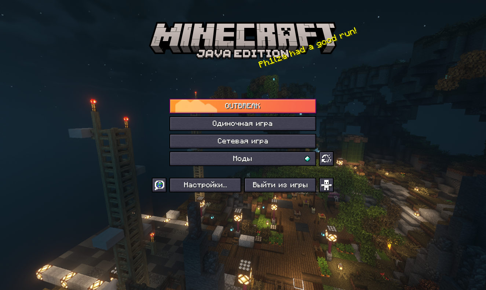
Мы установили ресурспак с атмосферной ночной панорамой старого хаба OUTBREAK и ресурспак, переключающий элементы интерфейса в стильную тёмную тему.
Светлая тема тоже есть
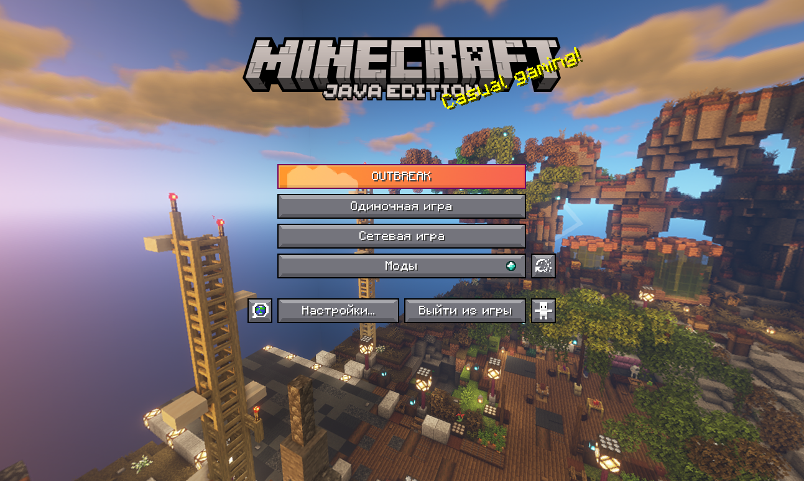
За панорамы отвечают ресурспаки outbreak-panorama-night и outbreak-panorama-day, а за тёмный интерфейс - Default Dark Mode. Вы всегда можете включить или отключить их по желанию.
Как настраивать моды
Нажмите кнопку Моды 💎. В списке слева видны все установленные моды. Многие из них имеют свои настройки, попасть в которые можно, кликнув по картинке мода.
Как включать и отключать моды
Некоторые моды добавлены в сборку, но не включены по умолчанию. Некоторые из них нестабильны и могут вызывать ошибки, а некоторые просто имеют узкую направленность и не нужны большинству игроков.
Вы можете включать и выключать моды и другие элементы лаунчере. Для этого нажмите правой кнопкой мыши по сборке и выберите Редактировать. В открывшемся окне можно ставить и снимать галочки напротив модов, ресурспаков и шейдеров на соответствующих вкладках слева.
🌸 Эстетические улучшения
Ресурспаки
Одним из главных визуальных изменений сборки является глобальный ресурспак Stay True. Этот ресурспак ощущается максимально ванильно, но игра с ним начинает выглядеть гораздо более живой и веющей свежестью. Он делает немного ярче окраску биомов, добавляет вариации травы и соединения блоков.
Пышные листья
Помимо этого, Stay True имеет пышные листья (первая картинка). По умолчанию в сборке листья заглушены специальным дополнением, поскольку они оказывают влияние на производительность, да и не всем могут понравиться. Пышные листья можно включить обратно, убрав ресурспак No Bushy Leaves.
Ресурспак Os' Shulkers добавляет красивые узоры на шалкеры.

Циановый - мой абсолютный фаворит
Как ценители эстетики, мы конечно не могли не добавить лучший ресурспак на гастов и лучший ресурспак на тыквы!
Ещё немного милых ресурспаков - лестницы, разнообразные кувшинки, объёмный тростник и другое.
Взрывы
Мод Explosive Enhancement изменяет визуальные эффекты взрывов на более эпичные и стилизованные

В последней версии взрывы светятся ✨

Улучшенная погода
Мод Particle Rain улучшает погодные эффекты. Снег больше не является плоской текстурой, теперь он красиво и реалистично падает с неба, а в пустыне теперь можно увидеть пыльную бурю.

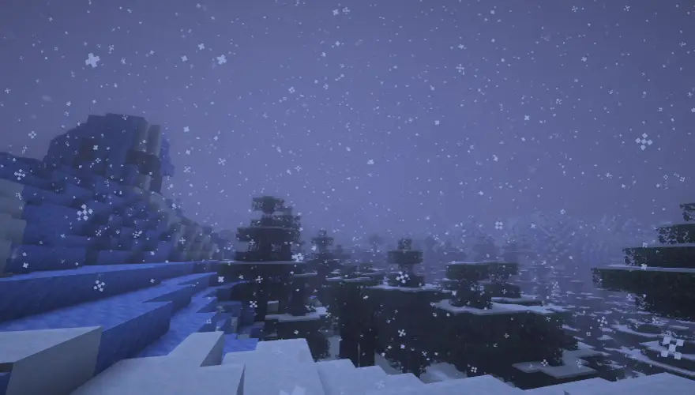
Сделайте это, если не собираетесь использовать шейдеры
Вопреки названию, вид дождя в этом моде изменён незначительно, но при этом он никак не подхватывается шейдерами и выглядит с ними просто ужасно. Поэтому кастомный дождь отключен в настройках мода.
Если вы не собираетесь использовать шейдеры, настоятельно рекомендуем зайти в Моды -> Particle Rain (кнопка настроек на иконке мода), отключить Render Vanilla Weather и включить Do Rain Particles. Это сделает снег чище, отключив старый снег под новым, и включит улучшенный дождь.
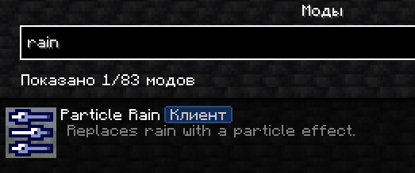 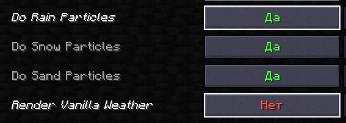
Анимация еды
Теперь еда анимирована, а также у игроков есть анимация руки, когда они едят еду.

До создания этой сборки я и не знал, что в майнкрафте всё настолько плохо, что другие игроки даже не видят анимацию руки.
Blur
Мод размывает фон, когда вы заходите в какой-либо интерфейс. Размытие можно настраивать в меню модов -> Blur.
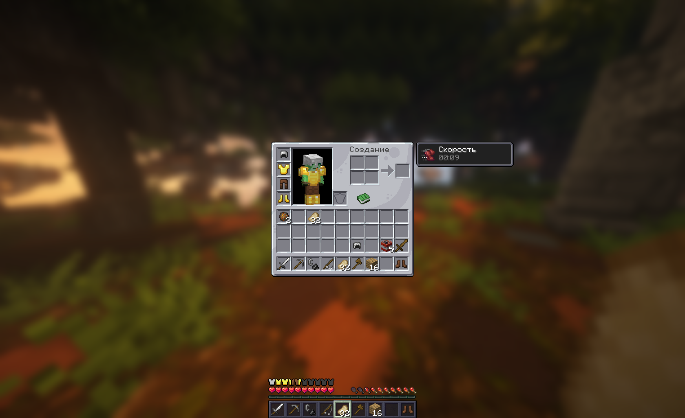
Падающие листья
Мод Falling Leaves делает леса более живыми, добавляя в них листья, падающие с деревьев.

Звуки
Мод ExtraSounds добавляет приятные звуки для инвентаря, а Presence Footsteps - звуки шагов по различным поверхностям. Там даже есть шорох травы!
💬 Чат
Анимации, скины, история
Чат стал лучше буквально во всём. Сообщения теперь отправляются с плавной анимацией и содержат лицо скина отправителя, длина прокрутки истории чата была расширена и сохраняется между перезаходами в миры, как и история отправки на Up, а ещё спам одинаковыми сообщениями теперь отображается как одно сообщение со счётчиком.

Эмоджи
Теперь вы можете отправлять различные символы, прописывая их названия, заключённые в :, подобно тому как это работает с эмоджи в Discord.
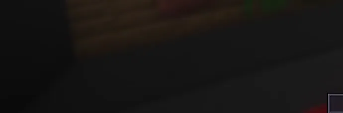
Японский шрифт
Также мы добавили ресурспак MisakiGothic2forMC на японские символы в ванильном пиксельном стиле.
🔥 Улучшения игрового опыта
Просмотр шалкеров
Просматривать шалкеры теперь можно в инвентаре, не заходя в них, а интерфейс открытого шалкера зависит от его цвета!


F3+F4 и свет без /op
Раньше у вас могли быть права на смену режима игры на сервере, но клиент не давал использовать быстрое меню на F3+F4 без прав оператора (/op). Также без прав оператора не работала вкладка со светом, командным блоком и палочкой отладки в креативе. Моды Switcher и Show Operator Tab решают эти недоразумения.


Скриншоты в буфер обмена
Скриншоты теперь автоматически копируются в буфер обмена. Это значит, что вы можете просто нажать Ctrl+V в поле ввода сообщения в Discord или VK, чтобы прикрепить только что сделанную картинку к сообщению.
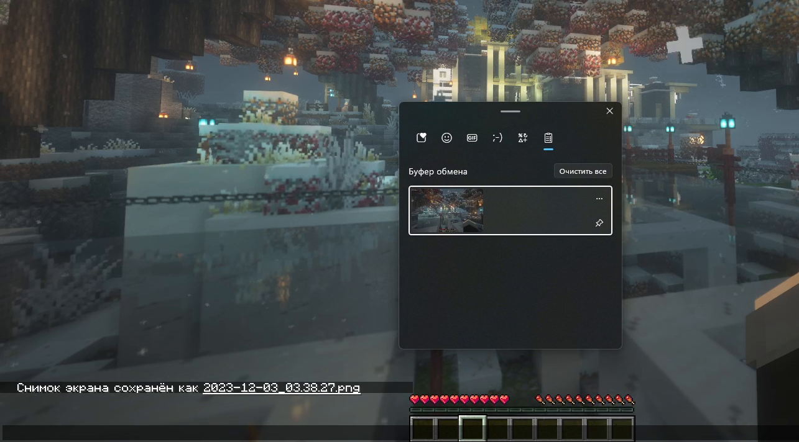
Перетаскивание элементов
Больше не нужно нажимать на неудобные стрелочки - ресурспаки и сервера теперь перетаскиваются!
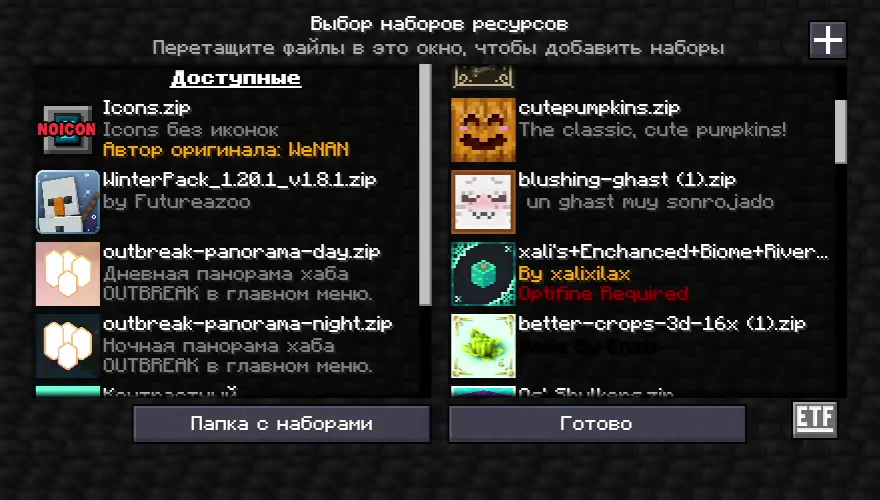
Книги и зелья
В зельеварку установлена схема от THE_PINPAL, а благодаря xali's Potion все зелья выглядят по-разному, а книги снабжены нашими собственными иконками!
Индикатор брони
Иконки брони теперь зависят от того, что на вас надето.

Еда
Мод AppleSkin добавляет удобную визуализацию голода и эффективности разной еды.

Эффекты и насыщение от еды в описаниях

Текущее насыщение

Сколько голода и насыщения может восполнить еда (при удерживании еды)

Потенциальное восстановление здоровья (при удерживании еды)
MiniHUD
Мод MiniHUD добавляет маленькую панель в углу экрана, которая может отображать различные данные, такие как FPS, время и координаты. Это удобнее, чем каждый раз открывать громоздкий F3 чтобы посмотреть их.
Панель скрывается и показывается клавишей H.

Улучшенный F3
Мы установили мод Better F3 и настроили его, убрав из панелей F3 всё бесполезное. Теперь информация разделена на группы разного цвета, в которых легко найти то, что нужно.
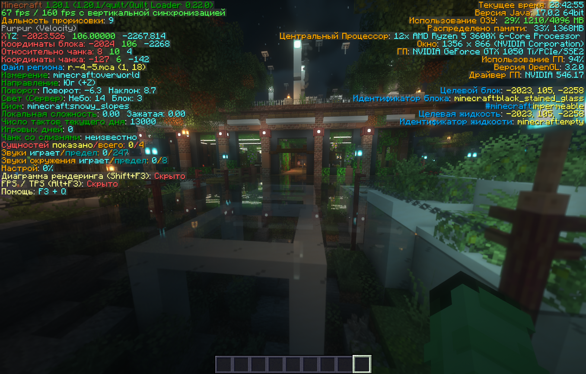
Чистые скорборды
Мод Ugly Scoreboard Fix убирает из скорбордов красные цифры справа, являющиеся побочным эффектом, без которого нельзя создать скорборд.

Ходьба с открытым GUI

Некоторые считают это читом, но мы не против
🚀 Оптимизация
Сравнение FPS и RAM
Локация 1
Ванилла: 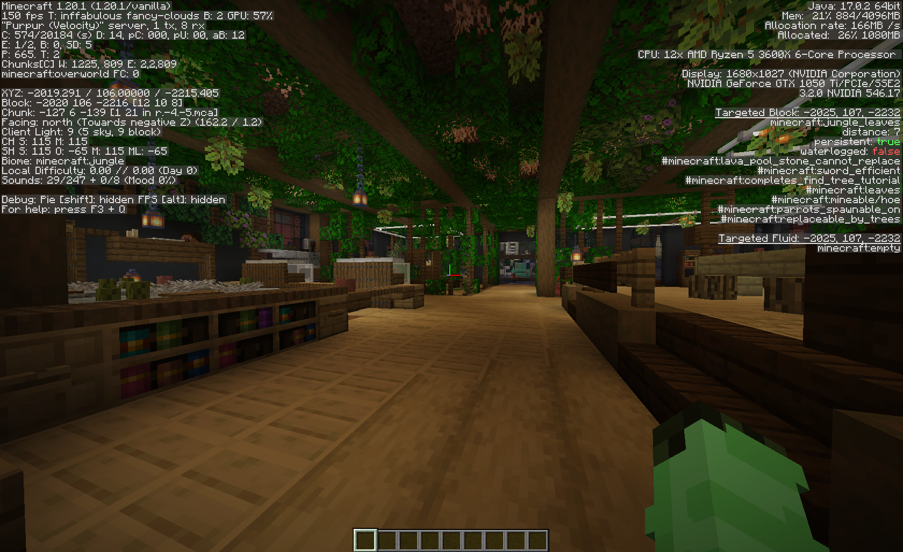
Сборка: 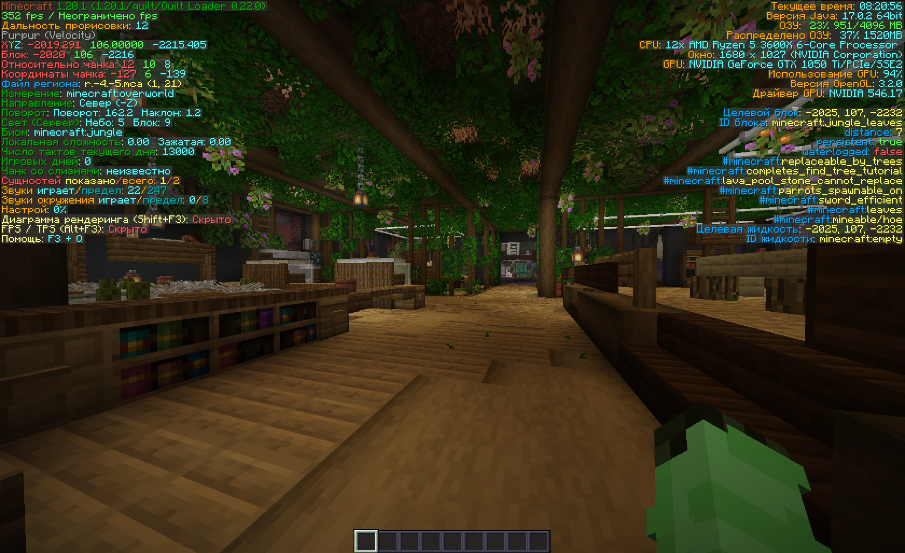
Локация 2
Ванилла: 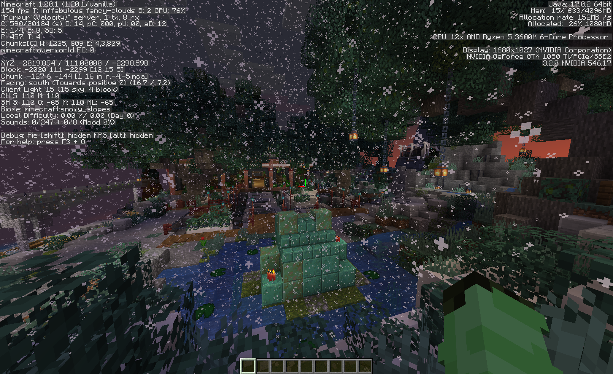
Сборка: 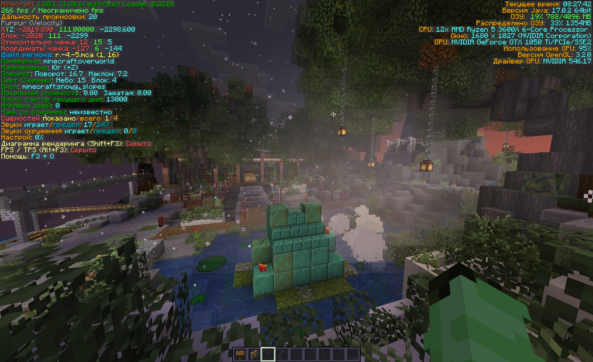
Тестирование проводилось с максимальными настройками ваниллы с прорисовкой 20 чанков и аналогичными настройками на сборке. Как видно на скриншотах выше, благодаря всем модам на оптимизацию, в сборке достигается до двух раз больше FPS, чем в ванилле.
FPS в ванилле держится около 120-160, тогда как в сборке он достигает 260-360 в зависимости от места.
Тем не менее сборка потребляет в среднем на 300 мб оперативной памяти больше, чем ванилла. При измерениях показатель потребления ОЗУ в ванилле держался около 850 мб, ни разу не превысив 1000, тогда как в сборке он варьировался от 850 до 1300.
Быстрое применение языков
Меню языков изменено, а сами языки теперь применяются мгновенно, без загрузки.
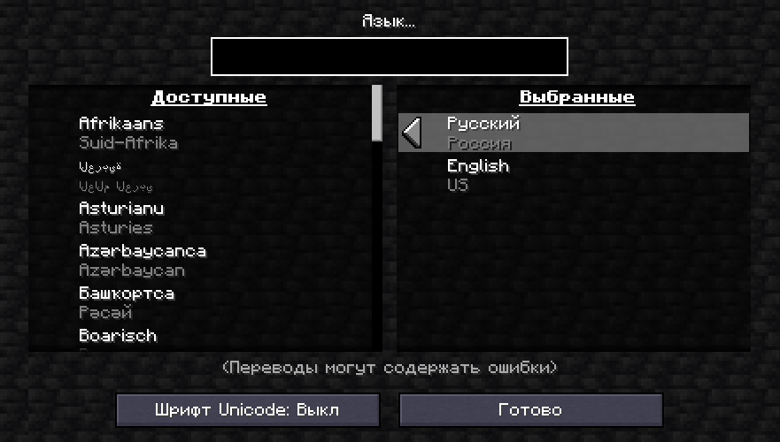
🪽 Прочее
Command Macros
Мод Command Macros незаменим, если вы часто работаете над постройками с WorldEdit или модерируете сервер с CoreProtect. Этот мод позволяет назначить команды на клавиши или их сочетания. Строительство ощущается совсем иначе с Ctrl + Z, Ctrl + C и Ctrl + V!
Info
Конфигурация со скриншота не идёт со сборкой. Настройте свои клавиши так, как хотите сами.
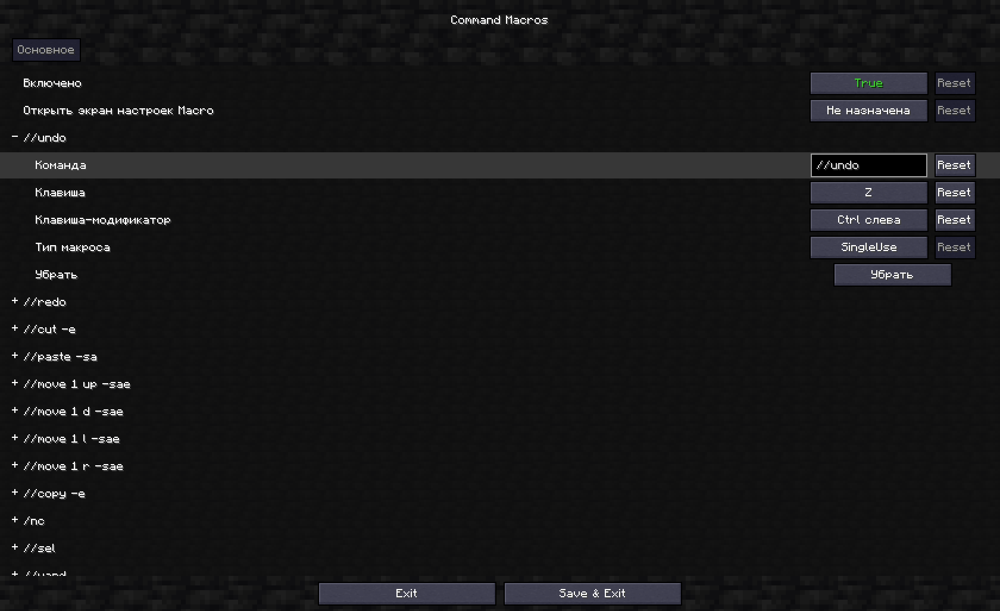
Auth Me
Этот мод позволяет менять аккаунт, не перезаходя в игру. В правом верхнем углу в меню серверов можно найти кнопку логина, нажав на которую, вы можете войти как в аккаунт Mojang или Microsoft, так и в автономном режиме (как пират).


⚙️ Отключённые моды
Внимание!
Ниже описанные моды находятся в архиве, но не включены. Чтобы пользоваться ими, включите их в лаунчере.
Slot Cycler
Мод Slot Cycler позволяет видеть рядом с хотбаром колонки инвентаря и прокручивать их, удерживая Alt или нажимая на кнопку номера слота несколько раз.
Довольно полезный мод, но некоторым может показаться сложной и неванильная механикой, так что включайте по своему желанию.
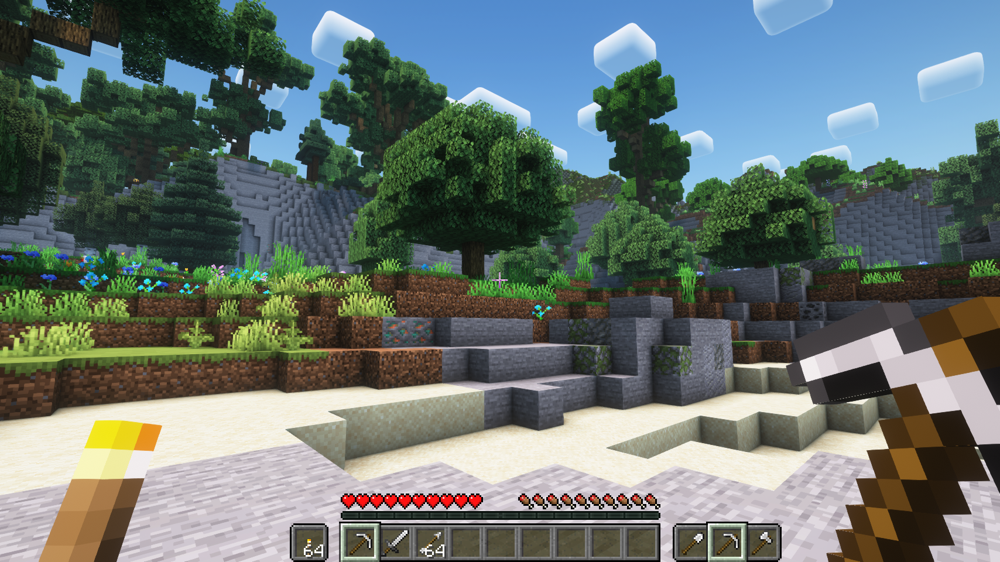
IBE Editor
Редактор NBT на клавишу I. Удобно для разработчиков модов и плагинов или для авторов ресурспаков с поддержкой CustomModelData.
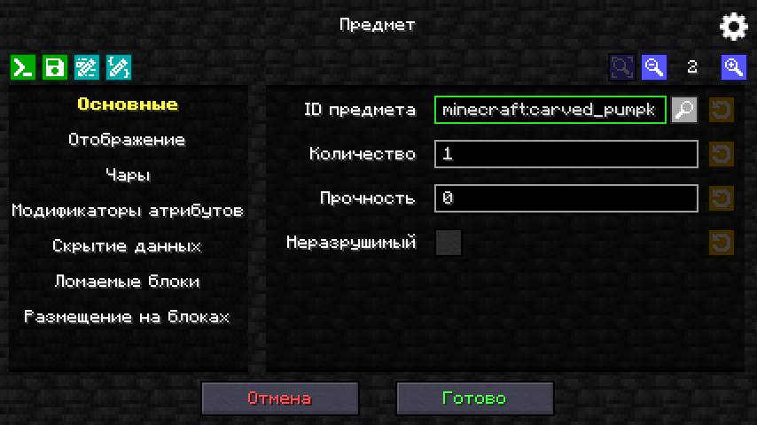
Litematica
Продвинутый мод для создания схем для копирования построек. Позволяет создать схему, узнать, сколько и каких блоков понадобится и разместить полупрозрачную схему в мире для дальнейшей постройки. Также может напрямую вставлять постройки при наличии нужных прав.
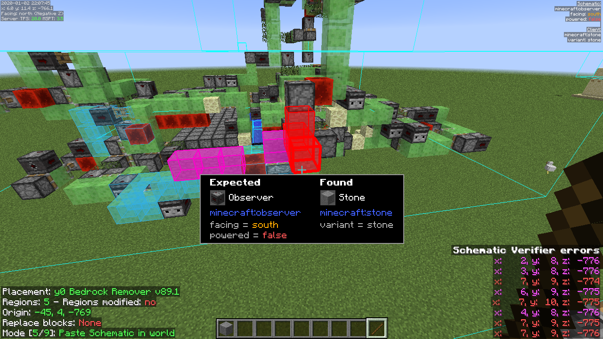
WorldEdit CUI
Маст-хэв мод для тех, кто работает с WorldEdit. Показывает текущее выделение, работает на серверах.
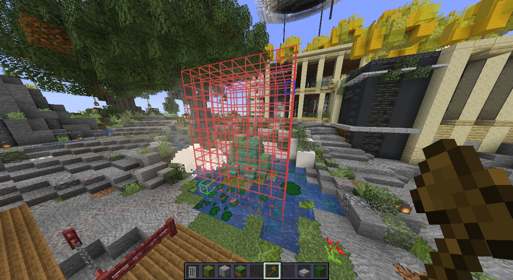
Physics Mod Pro
Мод, добавляющий реалистичную физику воды, качающиеся на ветру лианы, анимрованные двери, реалистичный снег и другие физические явления. Ванильным его точно назвать нельзя, да и на производительность он влияет очень сильно, но если у вас мощный компьютер и вы хотите открыть майнкрафт по-новому - этот мод стоит попробовать.
Встроенная конфигурация
В сборке уже есть конфиг для этого мода. В нём большинство эффектов сведены к максимально ванильным, так как некоторые из них были довольно раздражающими. Вы можете включить их обратно или удалить конфиг из папки config и настроить мод по-своему.
Vectorientation
Vectorientation добавляет стильные мультяшные деформации падающих блоков. Довольно неванильно и неизвестно как действует на производительность, поэтому по умолчанию решено было отключить.

Wakes
Мод Wakes добавляет след от лодки на воде. Несовместим с большинством шейдеров.

Tweakeroo
Мод Tweakeroo приносит большое количество различных возможностей и настроек в игру. Некоторые из них сложны, неванильны и узкоспециализированы, а некоторые вовсе могут считаться читами. Разбирайтесь в этом на свой страх и риск.
Held Item Info
Мод Held Item Info показывает список зачарований над хотбаром, когда вы берёте в руку предмет. Включайте по желанию.
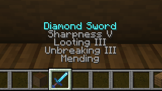
На этом обзор подходит к концу. На самом деле здесь были перечислены не все моды и ресурспаки, а только наиболее значительные. Вы можете скачать нашу сборку и сами увидеть всё, что в ней есть. Приятной игры!